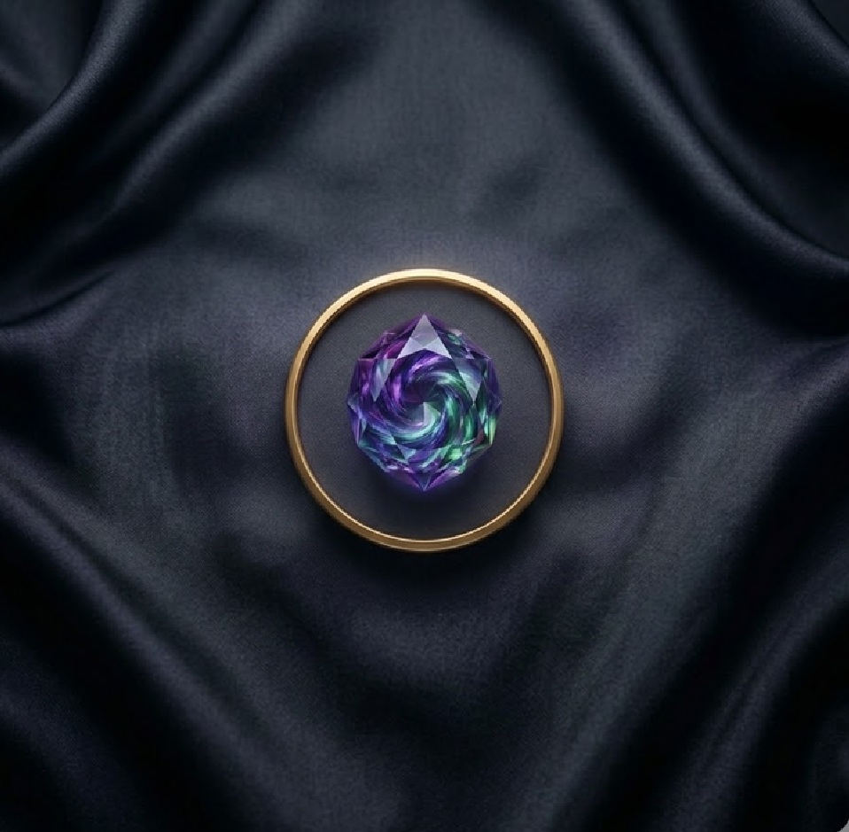
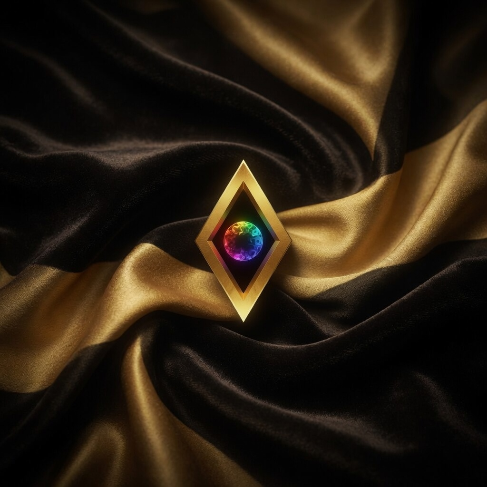
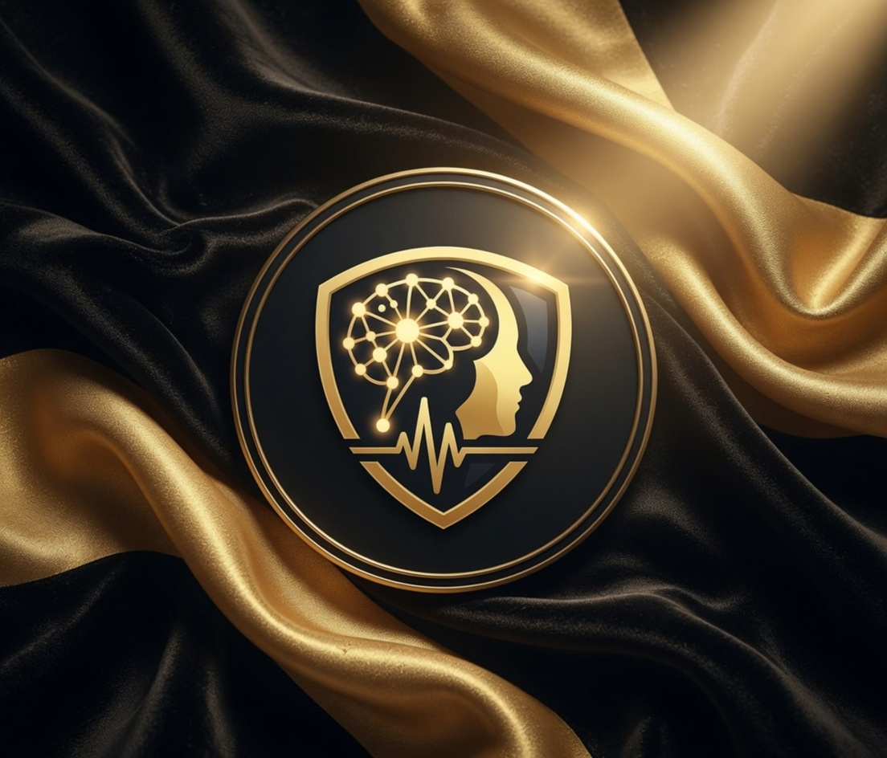
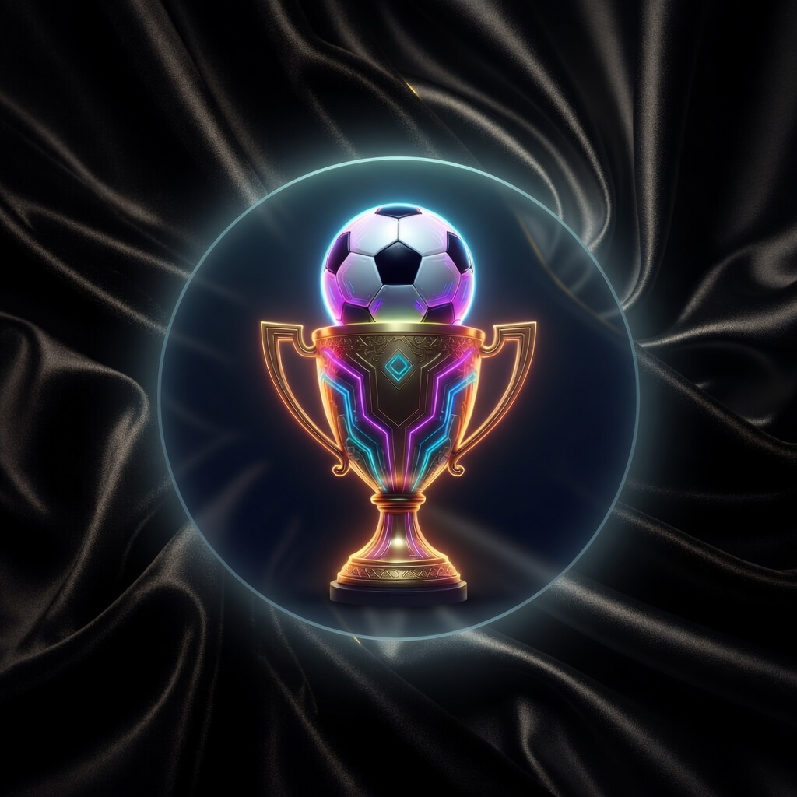
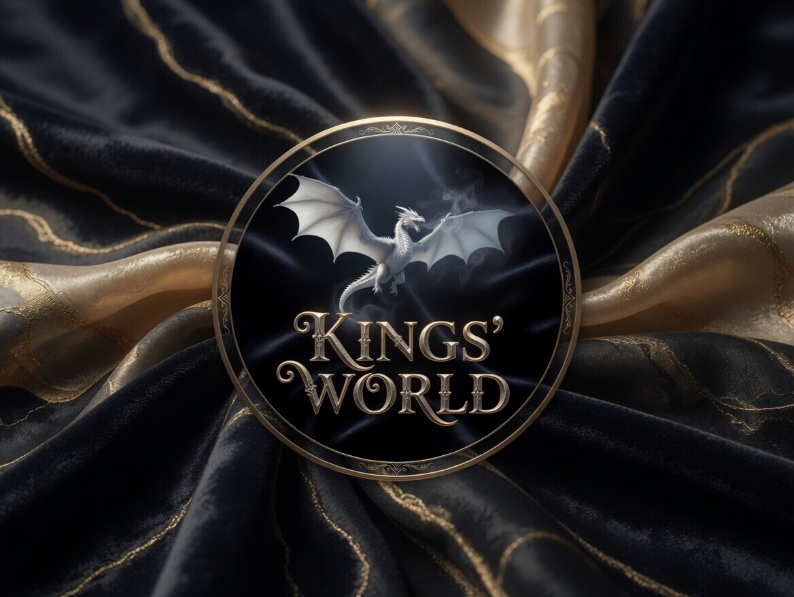
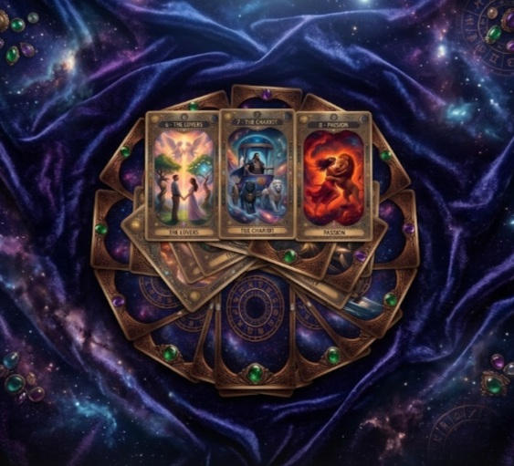
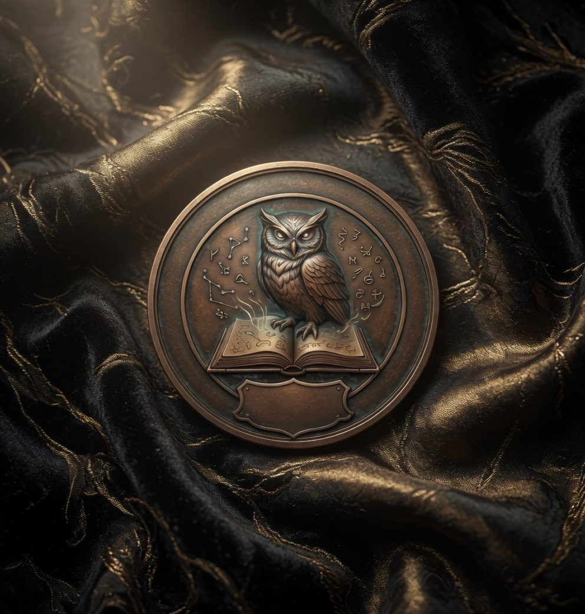

Beco's Lab
News
Método
Voltar
Apps
Produtos digitais e experiências mobile.
Studio
Design, parcerias e produção do Lab.
Infoprodutos
Saúde, organização e curso.
Beco's Lab
Sistema vivo de apps, jogos e métodos autorais.

Glyph

Mind

Elite50

Kings
Mapa do Império

Tarot

Studio / YouTube
← Ver todos
Compartilhar ↗
‹
›